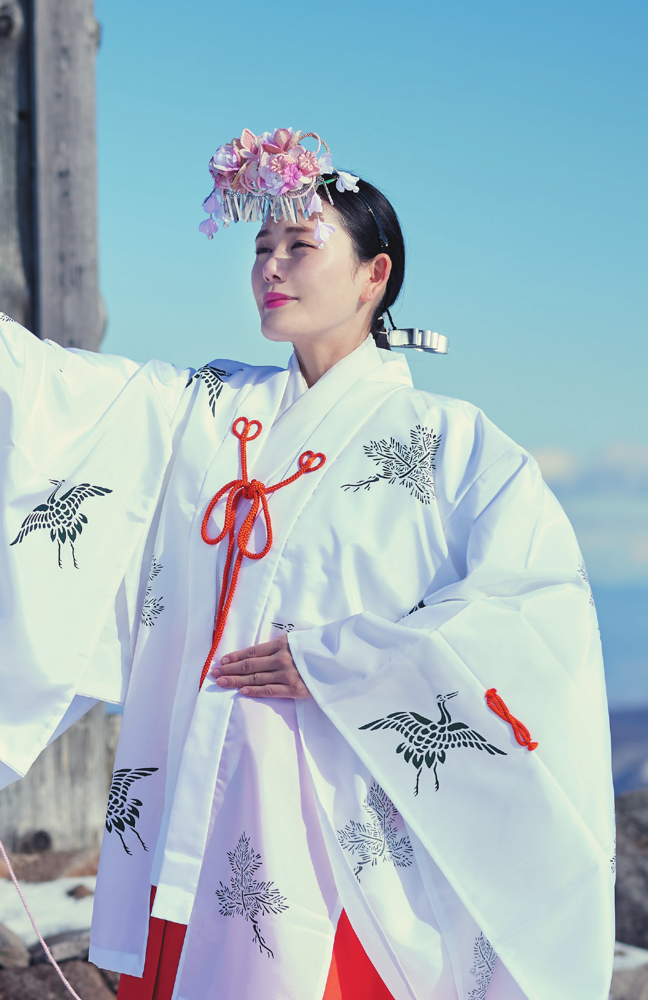
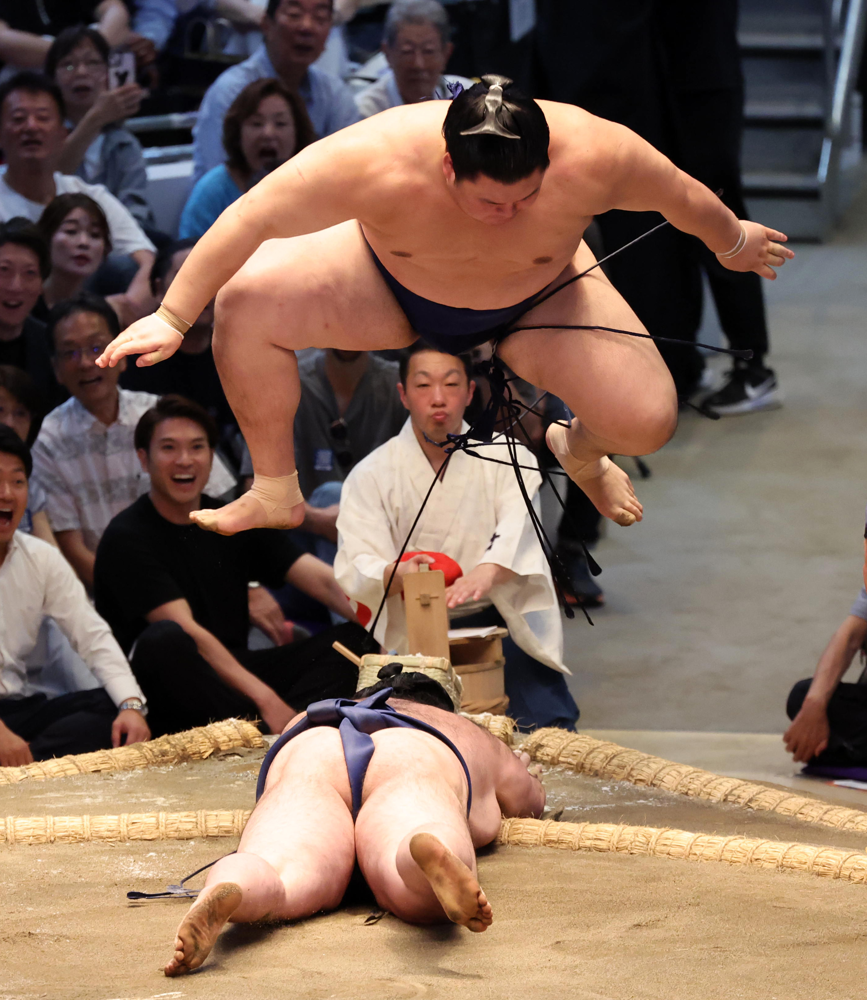
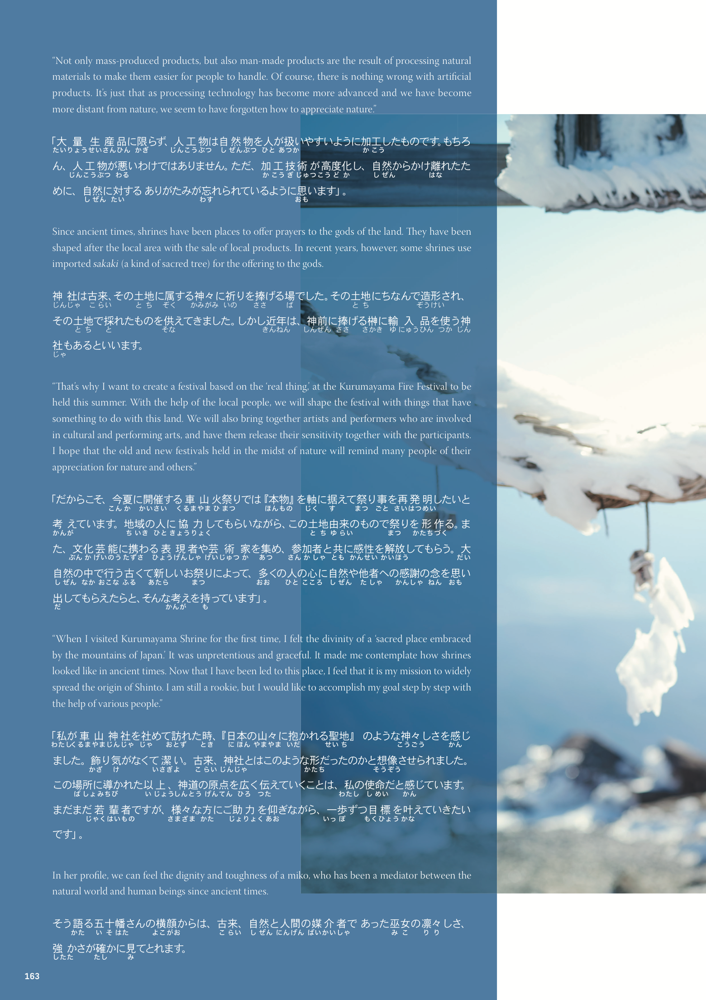

LVL 1 · 初心者
I know kana.
I want useful words.
EASY NEWS
あ→あさごはん
朝ごはんbreakfast
TODAY · N5
朝ごはんを食べて、学校へ行きます。
朝ごはんTap to saveStart with the sounds you know. Meet useful words inside a real, short news sentence.
Explore Easy News ▶JAPANESE, MADE USABLE
読める。わかる。話せる。
日本語が、あなたの毎日に近づく。
Kokomonster connects books, reading tools, current news and guided conversation—so every new word has somewhere to go.
日本の夏には、花火が空いっぱいに広がります。
In summer, fireworks fill the Japanese sky.
日本的夏夜裡，煙花鋪滿天空。
BOOK + APP READER
本で出会って、アプリでわかる。言葉が、もっと自分のものになる。
ARTISAN JAPAN · SUMMER NIGHT
の には、 いっぱいに が 。
In summer, fireworks spread across the Japanese sky.
日本的夏夜裡，煙花鋪滿天空。
START WHERE YOU ARE
今のあなたに合うところから、はじめよう。
Not sure where to begin? Take a 3-minute test →LVL 1 · 初心者
EASY NEWS
朝ごはんbreakfast
朝ごはんを食べて、学校へ行きます。
朝ごはんTap to saveStart with the sounds you know. Meet useful words inside a real, short news sentence.
Explore Easy News ▶LVL 2 · 上手になる
BOOK + READER

ARTISAN神道は、自然や先祖を敬い、
清らかな心を大切にする信仰です。
Open a culture-rich page, then let the reader make its ideas easier to stay with.
Find your book ▶LVL 3 · ペラペラ話せる
GUIDED CHAT

花火を見に行きたいです。
That sounds natural.夏の花火はきれいですよ。
Try one reply in a real conversation, then make it sound more like you.
Start a chat ▶EASY NEWS · ALWAYS RELEVANT
身近な日本を、やさしい言葉で読もう。

FEATURED · N4SUMOREAD · HEAR · UNDERSTAND
Meet the newest name at sumo’s highest rank.
大の里は、
相撲でいちばん
高い地位、
横綱になりました。
土俵での活躍に
注目が集まります。
BOOK + APP READER
本で読んで、アプリでわかる。
Read the story in a beautiful book, then carry its words into your day.

雪の山で、祈りをこめて
雪が積もる山で、
祈りをこめて舞う
人がいます。
In the snow-covered mountains, people dance with a prayer in their hearts.
Take in the story, photography and cultural details on a real page.
Tap for furigana, meaning and audio when a phrase catches your eye.
Save a phrase, then bring it into guided chat when you are ready.
GUIDED CHAT
知っている言葉から、会話をはじめよう。
ココが、言いたいことを自然な日本語へ導きます。
「花火を見に行きたいです」が自然です。
Use 〜に行きたいです for plans you want to make.Koko is your guideTry a reply. I’ll help you make it sound like you.YOUR BOOK IS THE KEY
本から、読める・わかる・話せるへ。
Choose the story that draws you in, then take its words into the reader, Easy News and Guided Chat.
ONE BOOK · FULL LEARNING LAYER
UNLOCKED WITH YOUR BOOK


TRY THE READING EXPERIENCE
ふりがな・翻訳・音声を、自分のペースに合わせて。
TOKYO · CULTURE
の には、 いっぱいに が 。
In summer, fireworks spread across the Japanese sky.
日本的夏夜裡，煙花鋪滿天空。
ONE KOKOMONSTER EXPERIENCE
本で出会い、アプリで読み、ウェブで使う。学んだことは、ひとつのアカウントにつながります。
Physical stories and cultural editions give every session a meaningful starting point.
本Scan or open a chapter with furigana, translation, narration and saved vocabulary.
あContinue with fresh news, guided conversations and short adaptive quizzes.
話One subscriptionBooks + App + WebVocabulary and progress stay with you
ONE LEARNING LOOP
ひとつの言葉が、ニュースから物語、会話、クイズへ。
EASY NEWS
やさしいニュースで、知っている文字を「使える日本語」に。
She wants useful everyday words, but lists never stick. A five-minute news story lets her hear one topic, tap new words and keep them with context.
TOKYO · WEATHER
が 東京で 咲きました。ことしは いつもの年より 早いです。
STORY READER
ふりがなも翻訳も、必要なときだけ。
She can follow the story until one sentence stops her. Furigana, translation and narration appear only when she asks—then get out of the way.
CHAPTER 01 · FESTIVALS
日本の夏には、空いっぱいに花火が広がります。家族や友達と、特別な時間を楽しみます。
In summer, fireworks spread across the Japanese sky. Families and friends enjoy this special time together.
GUIDED CHAT
間違えても大丈夫。会話を止めずに、自然な表現へ。
She understands more than she can say. Chat brings back words from her reading and corrects one useful point without breaking the conversation.
LEVEL QUEST
一問ずつ、自分の「わかる」を増やそう。
A quick adaptive quiz finds the grammar worth practising next—then links it back to a story, a news article, or a chat.
WORD FROM THIS JOURNEY · 花火
昨日、花火を ______。
Choose the form that describes what happened yesterday.
CHOOSE YOUR ACCESS
必要な体験から始めて、学びをひとつにつなげる。
EXPLORE
Free to start
READ DEEPER
From store one-time purchase
ALL ACCESS
One plan web + app
CHOOSE A BOOK
興味とレベルに合う一冊が、学びの入り口になります。
OPEN A REAL PAGE
Festivals, art, nature and delicacies—read as culture first and a lesson second.
日本の夏の夜空には、大きな花火が咲きます。
Large fireworks bloom across Japan’s summer night sky.
See the full contents, sample more pages, check your level, then choose print, digital or membership access.